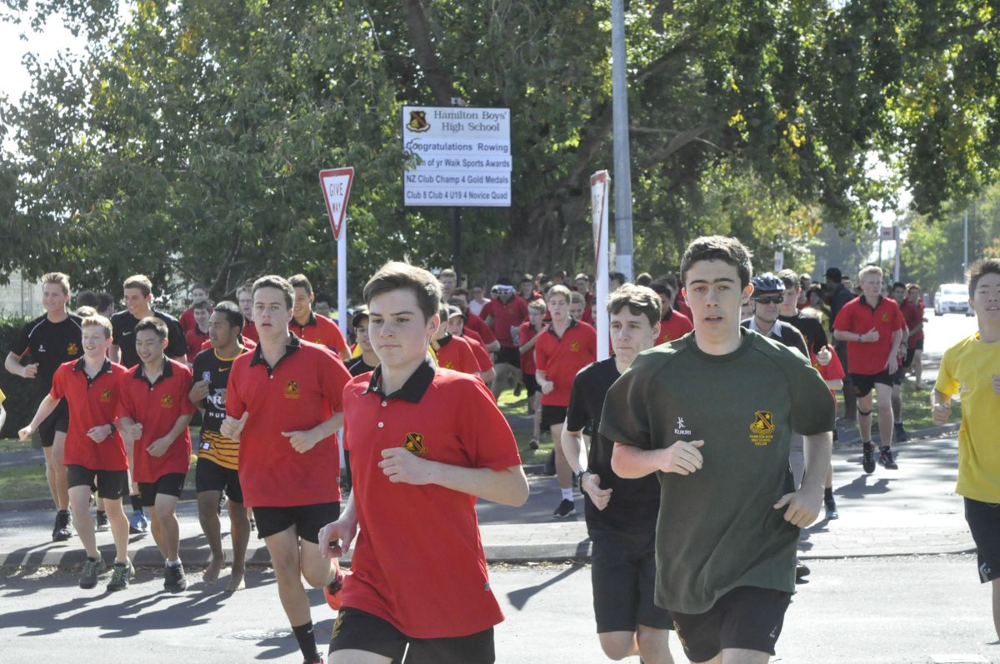

Types of Service
There are a large number of activities students are able to do to give service to the school and the wider community. Many students already give service in some form but are unaware of it, or are not signed up in the school award scheme so they are unable to be recognised for the service they do provide. Below are a variety of service opportunities offered by either Hamilton Boys’ High School or by community organisations, or forms of service that students are able to complete themselves.
Some examples of service are given below:
School Service:
- Coaching or refereeing junior sports teams
- Peer support work, mentoring and tutoring younger students
- Helping as a student librarian
- Participating in school service events (see here for more information)
- Joining the school Leo Club
Service in the Community:
- Volunteering for local charities and organisations (such as Hospice Waikato)
- Helping at local youth groups as a leader or group helper
- Environmental service (such as gully restoration or native tree planting)
First Aid Service:
Other examples of service are also found in the school diary.